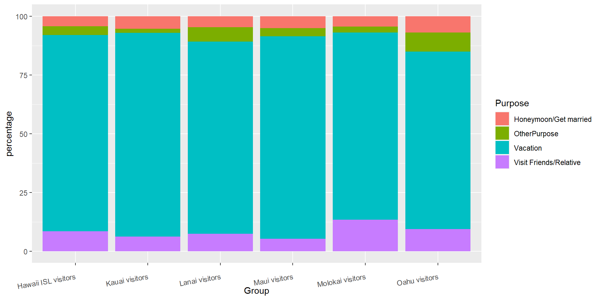
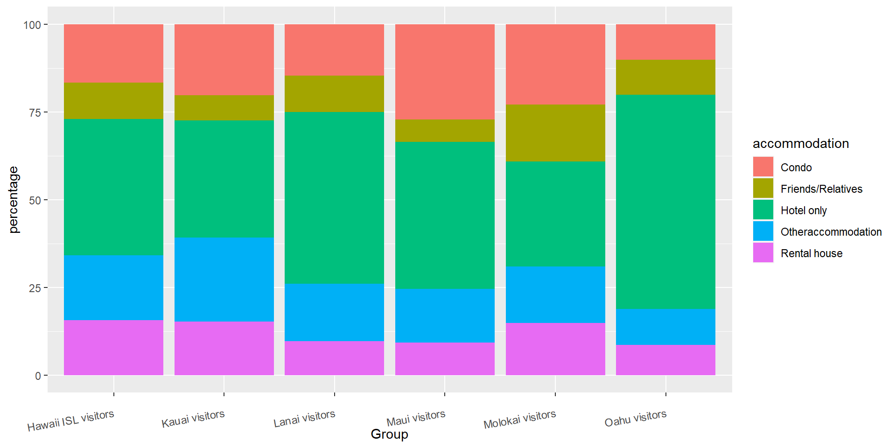
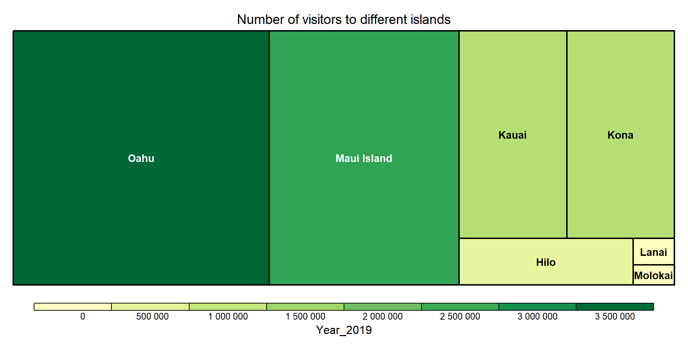
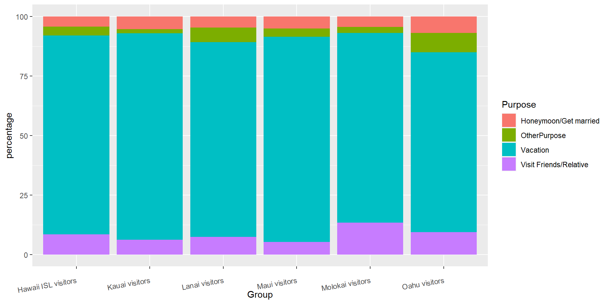
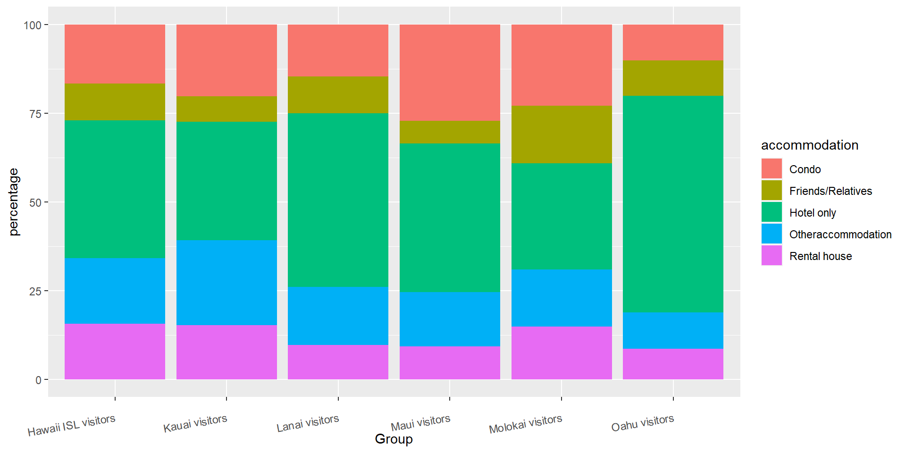
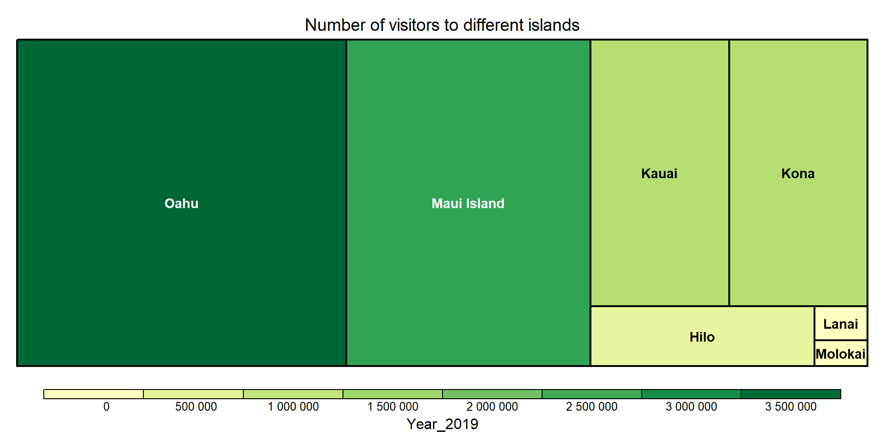

Chapter 5 Results
You have a lot of freedom to choose what to do, as long as you restrict yourselves to exploratory techniques (rather than modeling / prediction approaches). In addition, your analysis must be clearly documented and reproducible.
Provide a short nontechnical summary of the most revealing findings of your analysis written for a nontechnical audience. Take extra care to clean up your graphs, ensuring that best practices for presentation are followed, as described in the audience ready style section below.
Use subheadings as appropriate. See Todd Schneider’s blog posts for examples of thoughtful, informative subheadings.
The number of graphs will vary by project; we suggest a target of 10. (A plot with multiple facets counts as 1 graph). If you go over, make sure they are high quality and include commentary. A project with 10 good graphs plus commentary will receive a better grade than a project with 10 good graphs and 10 mediocre ones.

 
